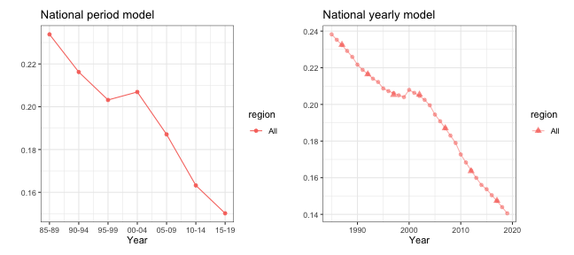
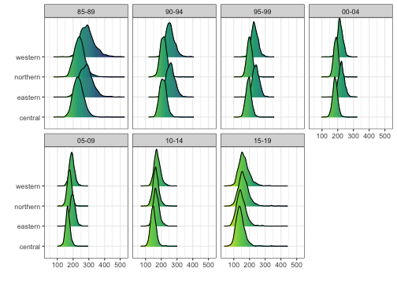
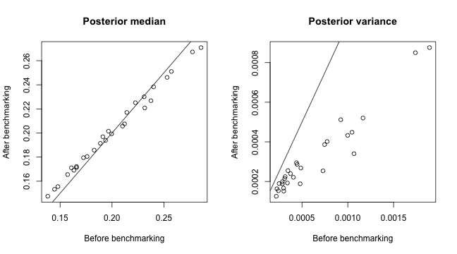

Estimating Subnational U5MR using Simulated Data
Zehang Richard Li
2024-02-29
Source:vignettes/articles/web_only/u5mr-vignette.Rmd
u5mr-vignette.RmdIn this vignette, we will discuss the use of both area and
cluster-level models using the SUMMER package. We will use the simulated
surveys in the DemoData dataset in the package. The
DemoData object is a list that contains full birth history
data from simulated surveys with stratified cluster sampling design,
similar to most of the DHS surveys. It has been pre-processed into the
person-month format, where for each list entry, each row represents one
person-month record. Each record contains columns for the cluster ID
(clustid), household ID (id), strata
membership (strata) and survey weights
(weights). The region and time period associated with each
person-month record has also been computed and saved in the dataset. Raw
DHS data can be processed into this format using the
getBirths function.
Load Data
We first load the package and data. We will use the dplyr package in some data processing steps, and ggplot2 and patchwork for visualization.
DemoData contains model survey data provided by DHS.
Note that this data is simulated and does not represent any real
country’s data. DemoData is obtained by processing the raw
DHS birth data (in .dta format) in R. The raw file of birth recodes can
be downloaded from the DHS website https://dhsprogram.com/data/Download-Model-Datasets.cfm.
For this demo dataset, no registration is needed. For real DHS survey
datasets, permission to access needs to be registered with DHS directly.
DemoData contains a small sample of the observations in
this dataset randomly assigned to \(5\)
example DHS surveys.
For more details, the following code snippet demonstrates how to
split the raw demo data into person-month format from similar to that in
the DemoData object. Notice that to read the file from
early version of stata, the package readstata13 is
required. The following script is based on the example dataset
ZZBR62FL.DTA available from the DHS website. We use the
interaction of v024 and v025 as the strata indicator for the purpose of
demonstration. We can see from range(data$v008) that the
CMC code for the date of interview corresponds to the year
1900 + floor(1386/12)= 2015. In practice, however, the
survey year is usually known. The survey year variable allows the
mis-recorded data. Dates after the surveyyear will be
removed. Thus for survey taking place over multiple years, the later
year is suggested to be used as surveyyear. If set to NA
then no checking will be performed.
library(readstata13)
my_fp <- "data/ZZBR62DT/ZZBR62FL.DTA"
dat <- getBirths(filepath = my_fp, surveyyear = 2015, strata = c("v024", "v025"))
dat <- dat[, c("v001", "v002", "v024", "per5", "ageGrpD", "v005", "strata", "died")]
colnames(dat) <- c("clustid", "id", "region", "time", "age", "weights", "strata",
"died")Back to the pre-processed dataset, DemoData is a list of
\(5\) data frames where each row
represent one person-month record and contains the \(8\) variables as shown below. Notice that
time variable is turned into 5-year bins from
80-84 to 10-14.
summary(DemoData)## Length Class Mode
## 1999 8 data.frame list
## 2003 8 data.frame list
## 2007 8 data.frame list
## 2011 8 data.frame list
## 2015 8 data.frame list
head(DemoData[[1]])## clustid id region time age weights strata died
## 1 1 1 eastern 00-04 0 1.1 eastern.rural 0
## 2 1 1 eastern 00-04 1-11 1.1 eastern.rural 0
## 3 1 1 eastern 00-04 1-11 1.1 eastern.rural 0
## 4 1 1 eastern 00-04 1-11 1.1 eastern.rural 0
## 5 1 1 eastern 00-04 1-11 1.1 eastern.rural 0
## 6 1 1 eastern 00-04 1-11 1.1 eastern.rural 0For demonstration purpose, we associate the regions in this simulated
dataset with an example map stored in the DemoMap object in
the SUMMER package. DemoMap contains geographic data from
the 1995 Uganda Admin 1 regions defined by DHS. It contains a
SpatialPolygonsDataFrame object geo and the corresponding
spatial adjacency matrix mat.
data(DemoMap)
geo <- DemoMap$geo
mat <- DemoMap$AmatThe spatial adjacency matrix can also be created directly from the SpatialPolygonsDataFrame by
mat <- getAmat(geo, geo$REGNAME)Finally, more details on the pipeline of downloading and processing raw DHS data and shapefiles can be found in the vignette A Case Study of Estimating Subnational U5MR using DHS data.
Direct estimates
First, we obtain Horvitz-Thompson estimators using
getDirectList. We specify the survey design as the
two-stage stratified cluster sampling where strata are specified in the
strata column, and clusters are specified by both the
cluster ID (clusterid) and household ID
(id).
years <- levels(DemoData[[1]]$time)
data_multi <- getDirectList(births = DemoData, years = years, regionVar = "region",
timeVar = "time", clusterVar = "~clustid+id", ageVar = "age", weightsVar = "weights",
geo.recode = NULL)Before fitting the model, we also aggregate estimates based on different surveys into a single set of estimates, using the inverse design-based variances as the weights.
dim(data_multi)## [1] 150 10
data <- aggregateSurvey(data_multi)
dim(data)## [1] 30 10Area-level model for U5MR
National estimates of U5MR
With the combined direct estimates, we are ready to fit the smoothing
models described in Li et al. (2019).
First, we ignore the subnational estimates, and fit a model with
temporal random effects only. In this part, we use the subset of data
region variable being “All”. In fitting this model, we first define the
list of time periods we wish to project the estimates on. First we can
fit a Random Walk 2 only model defined on the 5-year period. The
argument m = 1 specifies that the random walk is in the
same temporal resolution as the input data. See the next example for the
case where the random walk model is specified at a higher
resolution.
years.all <- c(years, "15-19")
fit1 <- smoothDirect(data = data, Amat = NULL, year_label = years.all, year_range = c(1985,
2019), time.model = "rw2", m = 1)## ----------------------------------
## Smoothed Direct Model
## Main temporal model: rw2
## Number of time periods: 35
## Temporal resolution: period model (m = 1)
## ----------------------------------
summary(fit1)## ----------------------------------
## Smoothed Direct Model
## Main temporal model: rw2
## Number of time periods: 35
## Temporal resolution: period model (m = 1)
## ----------------------------------
## Fixed Effects
## mean sd 0.025quant 0.5quant 0.97quant mode kld
## (Intercept) -1.4 0.081 -1.6 -1.4 -1.3 -1.4 0
## ----------------------------------
## Random Effects
## Name Model
## 1 time.struct RW2 model
## 2 time.unstruct IID model
## ----------------------------------
## Model hyperparameters
## mean sd 0.025quant 0.5quant 0.97quant mode
## Precision for time.struct 1212 9510 5.4 140 6882 9.8
## Precision for time.unstruct 1191 6732 11.2 207 6959 23.3
## NULL
## [,1]
## log marginal-likelihood (integration) -2.1
## log marginal-likelihood (Gaussian) -1.9When data is sparse, direct estimates at yearly level may be unstable. This is why we used 5-year periods as the model’s temporal resolution in this example. When performing temporal smoothing, however, we can define the temporal smoother on the yearly scale instead. Notice that the direct estimates are still calculated in 5-year intervals, but the smoothed estimator now produce estimates at both yearly and period resolutions.
fit2 <- smoothDirect(data = data, Amat = NULL, year_label = years.all, year_range = c(1985,
2019), time.model = "rw2", m = 5, type.st = 4)## ----------------------------------
## Smoothed Direct Model
## Main temporal model: rw2
## Number of time periods: 35
## Temporal resolution: yearly model (m = 5)
## ----------------------------------
summary(fit2)## ----------------------------------
## Smoothed Direct Model
## Main temporal model: rw2
## Number of time periods: 35
## Temporal resolution: yearly model (m = 5)
## ----------------------------------
## Fixed Effects
## mean sd 0.025quant 0.5quant 0.97quant mode kld
## (Intercept) -1.4 0.074 -1.6 -1.4 -1.3 -1.4 0
## ----------------------------------
## Random Effects
## Name Model
## 1 time.struct RGeneric2
## 2 time.unstruct RGeneric2
## ----------------------------------
## Model hyperparameters
## mean sd 0.025quant 0.5quant 0.97quant mode
## Theta1 for time.struct 5.0 1.9 1.6 5.0 8.8 4.6
## Theta1 for time.unstruct 4.3 1.8 1.1 4.2 7.8 3.9
## NULL
## [,1]
## log marginal-likelihood (integration) -75
## log marginal-likelihood (Gaussian) -75The marginal posteriors are already stored in the fitted object. We use the following function to extract and re-arrange them.
out1 <- getSmoothed(fit1)
out2 <- getSmoothed(fit2)We can compare the results visually using the function below.
g1 <- plot(out1) + ggtitle("National period model")
g2 <- plot(out2) + ggtitle("National yearly model")
g1 + g2
Subnational estimates of U5MR
Now we fit the full model on all subnational regions. First, we use the Random Walk 2 model defined on the 5-year period.
fit3 <- smoothDirect(data = data, Amat = mat, year_label = years.all, year_range = c(1985,
2019), time.model = "rw2", m = 1, type.st = 4)## ----------------------------------
## Smoothed Direct Model
## Main temporal model: rw2
## Number of time periods: 35
## Temporal resolution: period model (m = 1)
## Spatial effect: bym2
## Number of regions: 4
## Interaction temporal model: rw2
## Interaction type: 4
## ----------------------------------
out3 <- getSmoothed(fit3)Similarly we can also estimate the Random Walk 2 random effects on the yearly scale.
fit4 <- smoothDirect(data = data, Amat = mat, year_label = years.all, year_range = c(1985,
2019), time.model = "rw2", m = 5, type.st = 4)## ----------------------------------
## Smoothed Direct Model
## Main temporal model: rw2
## Number of time periods: 35
## Temporal resolution: yearly model (m = 5)
## Spatial effect: bym2
## Number of regions: 4
## Interaction temporal model: rw2
## Interaction type: 4
## ----------------------------------
out4 <- getSmoothed(fit4)The figures below shows the comparison of the subnational model with different temporal scales.
g1 <- plot(out3, is.yearly = FALSE) + ggtitle("Subnational period model")
g2 <- plot(out4, is.yearly = TRUE) + ggtitle("Subnational yearly model")
g1 + g2
We can also add back the direct estimates for comparison when plotting the smoothed estimates.
plot(out4, is.yearly = TRUE, data.add = data_multi, option.add = list(point = "mean",
by = "surveyYears")) + facet_wrap(~region, scales = "free")Finally, we show the estimates over time on maps.
mapPlot(data = subset(out4, is.yearly == F), geo = DemoMap$geo, variables = c("years"),
values = c("median"), by.data = "region", by.geo = "NAME_final", is.long = TRUE,
ncol = 4)
Cluster-level model for U5MR
We now describe the fitting of the cluster-level model for U5MR described in Martin et al. (2020) and Fuglstad, Li, and Wakefield (2021). For this simulated dataset, the strata variable is coded as region crossed by urban/rural status. For our analysis with urban/rural stratified model, we first construct a new strata variable that contains only the urban/rural status, i.e., the additional stratification within each region.
for (i in 1:length(DemoData)) {
strata <- DemoData[[i]]$strata
DemoData[[i]]$strata[grep("urban", strata)] <- "urban"
DemoData[[i]]$strata[grep("rural", strata)] <- "rural"
}To fit the cluster-level model, we calculate the number of
person-months and number of deaths for each cluster, time period, and
age group. We first create the data frame using the
getCounts function for each survey and combine them into a
single data frame.
The model fitting function smoothCluster expects columns
with specific names. We rename the cluster ID and time period columns to
be ‘cluster’ and ‘years’. The response variable is ‘Y’ and the binomial
total is ‘total’.
counts.all <- NULL
for (i in 1:length(DemoData)) {
vars <- c("clustid", "region", "strata", "time", "age")
counts <- getCounts(DemoData[[i]][, c(vars, "died")], variables = "died", by = vars,
drop = TRUE)
counts <- counts %>%
mutate(cluster = clustid, years = time, Y = died)
counts$survey <- names(DemoData)[i]
counts.all <- rbind(counts.all, counts)
}With the created data frame, we fit the cluster-level model using the
smoothCluster function. Notice that here we need to specify
the age groups (age.groups), the length of each age group
(age.n) in months, and how the age groups are mapped to the
temporal random effects (age.rw.group). In the default
case, age.rw.group = c(1, 2, 3, 3, 3, 3) means the first
two age groups each has its own temporal trend, the the following four
age groups share the same temporal trend. We start with the default
temporal model of random walk or order 2 on the 5-year periods in this
dataset (with real data, we can use a finer temporal resolution). For
the space-time interaction, we use an AR(1) prior (specified by
st.time.model) interacting with a spatial ICAR prior, with
random linear trends in each area (specified by
pc.st.slope.u and pc.st.slope.alpha). We add
survey iid effects to the model as well using
survey.effect = TRUE argument. The temporal main effects
are defined for each stratum separately (specified by
strata.time.effect = TRUE, so in total six random walks are
used to model the main temporal effect.
periods <- c("85-89", "90-94", "95-99", "00-04", "05-09", "10-14")
fit.bb <- smoothCluster(data = counts.all, Amat = DemoMap$Amat,
family = "betabinomial",
year_label = c(periods, "15-19"),
age.groups = c("0", "1-11", "12-23", "24-35", "36-47", "48-59"),
age.n = c(1, 11, 12, 12, 12, 12),
age.rw.group = c(1, 2, 3, 3, 3, 3),
time.model = "rw2",
st.time.model = "ar1",
pc.st.slope.u = 1, pc.st.slope.alpha = 0.01,
survey.effect = TRUE,
strata.time.effect = TRUE)## Argument 'age.rw.group' have been deprecated and replaced by 'age.time.group' in version 1.4.0. The value for 'age.time.group' has been set to be the input argument 'age.rw.group'## ----------------------------------
## Cluster-level model
## Main temporal model: rw2
## Number of time periods: 7
## Spatial effect: bym2
## Number of regions: 4
## Interaction temporal model: ar1
## Interaction type: 4
## Interaction random slopes: yes
## Number of age groups: 6
## Stratification: yes
## Number of age-specific fixed effect intercept per stratum: 6
## Number of age-specific trends per stratum: 3
## Strata-specific temporal trends: yes
## Survey effect: yes
## ----------------------------------
summary(fit.bb)## ----------------------------------
## Cluster-level model
## Main temporal model: rw2
## Number of time periods: 7
## Spatial effect: bym2
## Number of regions: 4
## Interaction temporal model: ar1
## Interaction type: 4
## Interaction random slopes: yes
## Number of age groups: 6
## Stratification: yes
## Number of age group fixed effect intercept per stratum: 6
## Number of age-specific trends per stratum: 3
## Strata-specific temporal trends: yes
## Survey effect: yes
## ----------------------------------
## Fixed Effects
## mean sd 0.025quant 0.5quant 0.97quant mode kld
## age.intercept0:rural -3.0 0.14 -3.3 -3.0 -2.7 -3.0 0
## age.intercept1-11:rural -4.7 0.11 -4.9 -4.7 -4.5 -4.7 0
## age.intercept12-23:rural -5.8 0.14 -6.1 -5.8 -5.5 -5.8 0
## age.intercept24-35:rural -6.6 0.20 -6.9 -6.6 -6.2 -6.6 0
## age.intercept36-47:rural -6.9 0.23 -7.3 -6.9 -6.4 -6.9 0
## age.intercept48-59:rural -7.3 0.29 -7.9 -7.3 -6.8 -7.3 0
## age.intercept0:urban -2.7 0.13 -3.0 -2.7 -2.5 -2.7 0
## age.intercept1-11:urban -5.0 0.13 -5.2 -5.0 -4.7 -5.0 0
## age.intercept12-23:urban -5.7 0.17 -6.1 -5.7 -5.4 -5.7 0
## age.intercept24-35:urban -7.1 0.28 -7.6 -7.1 -6.5 -7.1 0
## age.intercept36-47:urban -7.6 0.37 -8.3 -7.6 -6.9 -7.6 0
## age.intercept48-59:urban -8.0 0.46 -8.9 -8.0 -7.1 -8.0 0
##
## Slope fixed effect index:
## time.slope.group1: 0:rural
## time.slope.group2: 1-11:rural
## time.slope.group3: 12-23:rural, 24-35:rural, 36-47:rural, 48-59:rural
## time.slope.group4: 0:urban
## time.slope.group5: 1-11:urban
## time.slope.group6: 12-23:urban, 24-35:urban, 36-47:urban, 48-59:urban
## ----------------------------------
## Random Effects
## Name Model
## 1 time.struct RW2 model
## 2 time.unstruct IID model
## 3 region.struct BYM2 model
## 4 region.int Besags ICAR model
## 5 st.slope.id IID model
## 6 survey.id IID model
## ----------------------------------
## Model hyperparameters
## mean sd 0.025quant
## overdispersion for the betabinomial observations 0.002 0.001 0.001
## Precision for time.struct 89.127 107.545 11.587
## Precision for time.unstruct 835.404 3162.330 13.344
## Precision for region.struct 362.694 1178.564 7.304
## Phi for region.struct 0.347 0.237 0.029
## Precision for region.int 662.287 2901.332 6.107
## Group PACF1 for region.int 0.898 0.190 0.304
## Precision for st.slope.id 106.781 393.439 1.313
## 0.5quant 0.97quant mode
## overdispersion for the betabinomial observations 0.002 0.005 0.002
## Precision for time.struct 57.308 338.863 27.622
## Precision for time.unstruct 219.625 4806.292 28.959
## Precision for region.struct 109.650 2037.244 16.380
## Phi for region.struct 0.300 0.844 0.088
## Precision for region.int 146.979 3888.536 11.031
## Group PACF1 for region.int 0.971 1.000 1.000
## Precision for st.slope.id 27.986 615.455 2.528
## NULL
## [,1]
## log marginal-likelihood (integration) -3454
## log marginal-likelihood (Gaussian) -3449In this example, we do not have any bias adjustment in this simple
model. If the ratio adjustments to U5MR are known, they could be entered
with the bias.adj and bias.adj.by arguments
when fitting the model.
Posterior samples from the model are taken and summarized using the
getSmoothed function. For models with a large number of
areas and time points, this step may take some time to compute. The
save.draws argument makes it possible to save the raw
posterior draws, so that we can use them again in other functions or
recompute different posterior credible intervals.
est.bb <- getSmoothed(fit.bb, nsim = 1000, CI = 0.95, save.draws = TRUE)
summary(est.bb)## ---------------------------------------------
## Stratified estimates stored in ...$stratified
## Aggregated estimates stored in ...$overall
## ---------------------------------------------
## Estimates computed for 7 time period(s) and 4 area(s)
## No strata weights has been supplied. Overall estimates are not calculated.
## Posterior draws are saved in the output. You can use 'getSmoothed(..., draws = ...$draws)' next time to speed up the call.
## 1000 posterior draws taken.For example, to recompute the posterior CI directly using the existing draws:
est.bb.90CI <- getSmoothed(fit.bb, nsim = 1000, CI = 0.95, draws = est.bb$draws)Aggregation across strata
The est.bb object above computes the U5MR estimates by
urban/rural strata. In order to obtain the overall region-specific U5MR,
we need additional information on the population fractions of each
stratum within regions. As an demonstration, we simulate the population
totals over the years with
pop.base <- expand.grid(region = c("central", "eastern", "northern", "western"),
strata = c("urban", "rural"))
pop.base$population <- round(runif(dim(pop.base)[1], 1000, 20000))
periods.all <- c(periods, "15-19")
pop <- NULL
for (i in 1:length(periods.all)) {
tmp <- pop.base
tmp$population <- pop.base$population + round(rnorm(dim(pop.base)[1], mean = 0,
sd = 200))
tmp$years <- periods.all[i]
pop <- rbind(pop, tmp)
}
head(pop)## region strata population years
## 1 central urban 16641 85-89
## 2 eastern urban 2662 85-89
## 3 northern urban 4307 85-89
## 4 western urban 13222 85-89
## 5 central rural 16821 85-89
## 6 eastern rural 17979 85-89In order to compute the aggregated estimates, we need the proportion of urban/rural populations within each region in each time period.
weight.strata <- expand.grid(region = c("central", "eastern", "northern", "western"),
years = periods.all)
weight.strata$urban <- weight.strata$rural <- NA
for (i in 1:dim(weight.strata)[1]) {
which.u <- which(pop$region == weight.strata$region[i] & pop$years == weight.strata$years[i] &
pop$strata == "urban")
which.r <- which(pop$region == weight.strata$region[i] & pop$years == weight.strata$years[i] &
pop$strata == "rural")
weight.strata[i, "urban"] <- pop$population[which.u]/(pop$population[which.u] +
pop$population[which.r])
weight.strata[i, "rural"] <- 1 - weight.strata[i, "urban"]
}
head(weight.strata)## region years rural urban
## 1 central 85-89 0.50 0.50
## 2 eastern 85-89 0.87 0.13
## 3 northern 85-89 0.37 0.63
## 4 western 85-89 0.36 0.64
## 5 central 90-94 0.51 0.49
## 6 eastern 90-94 0.87 0.13Now we can recompute the smoothed estimates with the population fractions.
est.bb <- getSmoothed(fit.bb, nsim = 1000, CI = 0.95, save.draws = TRUE, weight.strata = weight.strata)
head(est.bb$overall)## region years time area variance median mean upper lower rural urban
## 5 central 85-89 1 1 0.00116 0.23 0.23 0.30 0.17 0.50 0.50
## 6 central 90-94 2 1 0.00047 0.21 0.21 0.26 0.17 0.51 0.49
## 7 central 95-99 3 1 0.00027 0.19 0.19 0.23 0.16 0.50 0.50
## 1 central 00-04 4 1 0.00023 0.18 0.18 0.21 0.15 0.51 0.49
## 2 central 05-09 5 1 0.00021 0.17 0.17 0.20 0.14 0.50 0.50
## 3 central 10-14 6 1 0.00030 0.15 0.15 0.18 0.12 0.50 0.50
## is.yearly years.num
## 5 FALSE NA
## 6 FALSE NA
## 7 FALSE NA
## 1 FALSE NA
## 2 FALSE NA
## 3 FALSE NAWe can compare the stratum-specific and aggregated U5MR estimates now.
Visualizations
There are extensive visualization tools in the package. We can add
hatching to the map visualizations to indicate uncertainty of the
estimates using hatchPlot with similar syntax.
hatchPlot(est.bb$overall,
geo = DemoMap$geo, by.data = "region", by.geo = "REGNAME",
is.long = TRUE, variables = "years", values = "median",
lower = "lower", upper = "upper", hatch = "red",
ncol = 4, direction = -1, per1000 = TRUE, legend.label = "U5MR")
Next we show the posterior densities of the estimates, where each
each panel correspond to one time period, and the regions are ordered by
the posterior median of estimates in the last year (specified by the
order = -1 argument).
ridgePlot(draws = est.bb, year_plot = periods.all,
ncol = 4, per1000 = TRUE, order = -1, direction = -1)
It can also be plotted for each region over time as well.
ridgePlot(draws = est.bb, year_plot = periods.all,
ncol = 4, per1000 = TRUE, by.year = FALSE, direction = -1)
Benchmarking to external information
When external estimates are available on the national level, we may
want the subnational estimates to aggregate to the national estimates
for internal validation purposes. Methods to benchmark to the national
mean estimates were proposed in the literature. The vignette A Case
Study of Estimating Subnational U5MR using DHS data demonstrates
the approach described in Li et al. (2019)
for the area-level model. The bias.adj argument in the
smoothCluster() function allows one to adjust the estimates
if the benchmarking ratio is known, using the approximation methods
described in Wakefield et al. (2019). We
refer readers to the package document for more details. Here we
demonstrate a post-processing method described by Okonek and Wakefield (2022). It has the
additional advantage that both the mean and uncertainty of the national
estimates are accounted for in the benchmarking process.
To demonstrate the function, we first simulate national estimates. For a realistic simulation, we reuse the national direct estimates and add a constant bias term. We assume these estimates are from an external source. Thus we expect the estimates after benchmarking will be larger in general.
national <- data.frame(years = periods.all, est = out1$median + 0.01, sd = runif(7,
0.01, 0.03))
head(national)## years est sd
## 1 85-89 0.24 0.020
## 2 90-94 0.23 0.012
## 3 95-99 0.21 0.025
## 4 00-04 0.22 0.023
## 5 05-09 0.20 0.018
## 6 10-14 0.17 0.025In order to perform the benchmarking process, we need the proportion of population by region over the time periods. We can compute these from the simulated population before.
weight.region <- expand.grid(region = c("central", "eastern", "northern", "western"),
years = periods.all)
weight.region$proportion <- NA
for (i in 1:dim(weight.region)[1]) {
which <- which(pop$region == weight.strata$region[i] & pop$years == weight.strata$years[i])
which.year <- which(pop$years == weight.strata$years[i])
weight.region[i, "proportion"] <- sum(pop$population[which])/sum(pop$population[which.year])
}
head(weight.region)## region years proportion
## 1 central 85-89 0.410
## 2 eastern 85-89 0.253
## 3 northern 85-89 0.084
## 4 western 85-89 0.253
## 5 central 90-94 0.413
## 6 eastern 90-94 0.256We perform the benchmarking procedure using the
Benchmark function
est.bb.bench <- Benchmark(est.bb, national, weight.region = weight.region, estVar = "est",
sdVar = "sd", timeVar = "years")Since the benchmarking procedure is based on a rejection sampler, the number of posterior draws accepted after benchmarking can be small, as in this example. We recommend increasing the number of draws first, i.e.,
est.bb <- getSmoothed(fit.bb, nsim = 20000, CI = 0.95, save.draws = TRUE, weight.strata = weight.strata)
est.bb.bench <- Benchmark(est.bb, national, weight.region = weight.region, estVar = "est",
sdVar = "sd", timeVar = "years")We can compare the posterior median and variance before and after benchmarking.
par(mfrow = c(1, 2))
plot(est.bb$overall$median, est.bb.bench$overall$median, xlab = "Before benchmarking",
ylab = "After benchmarking", main = "Posterior median")
abline(c(0, 1))
plot(est.bb$overall$variance, est.bb.bench$overall$variance, xlab = "Before benchmarking",
ylab = "After benchmarking", main = "Posterior variance")
abline(c(0, 1))
As an sanity check, we can compute the simple weighted average of the posterior median of all regions to form a set of rough national estimates. It can be seen that the benchmarked estimates are indeed higher and closer to the simulated national estimates benchmarked against.
compare <- national
compare$before <- NA
compare$after <- NA
for (i in 1:dim(compare)[1]) {
weights <- subset(weight.region, years == national$years[i])
sub <- subset(est.bb$overall, years == national$years[i])
sub <- merge(sub, weights)
sub.bench <- subset(est.bb.bench$overall, years == national$years[i])
sub.bench <- merge(sub.bench, weights)
compare$before[i] <- sum(sub$proportion * sub$median)
compare$after[i] <- sum(sub.bench$proportion * sub.bench$median)
}
plot(compare$est, compare$after, col = 2, pch = 10, xlim = range(c(compare$est, compare$before,
compare$after)), ylim = range(c(compare$est, compare$before, compare$after)),
xlab = "External national estimates", ylab = "Weighted posterior median after benchmarking",
main = "Sanity check: compare weighted average of area medians to benchmark")
points(compare$est, compare$before)
abline(c(0, 1))
legend("topleft", c("Before benchmarking", "After benchmarking"), pch = c(1, 10),
col = c(1, 2))